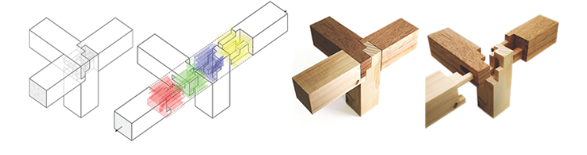
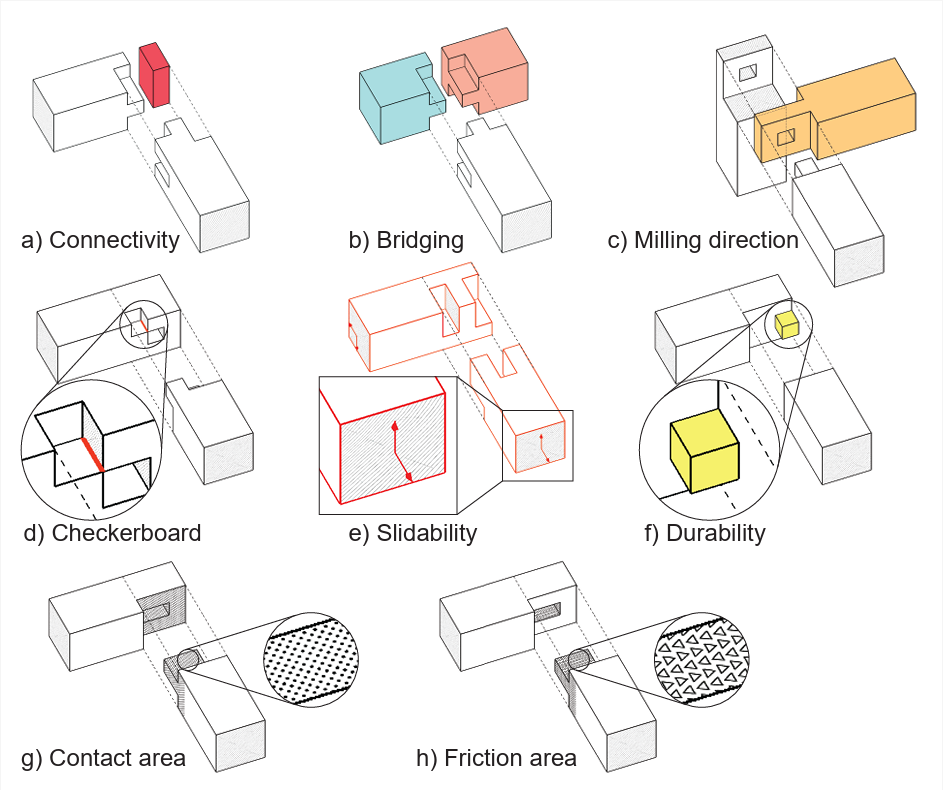
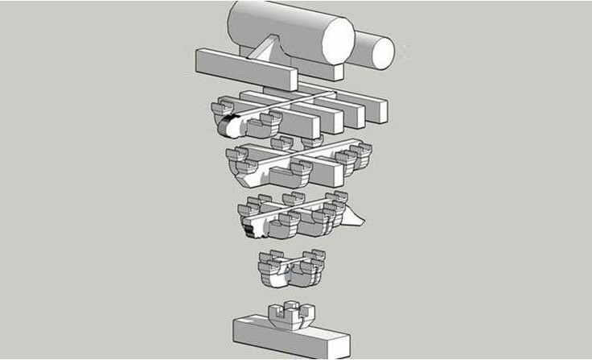
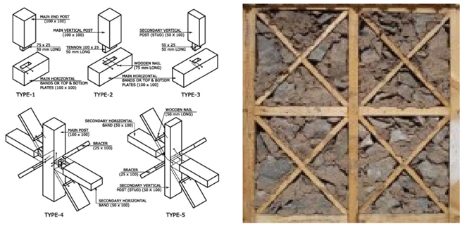
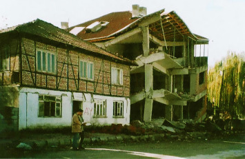
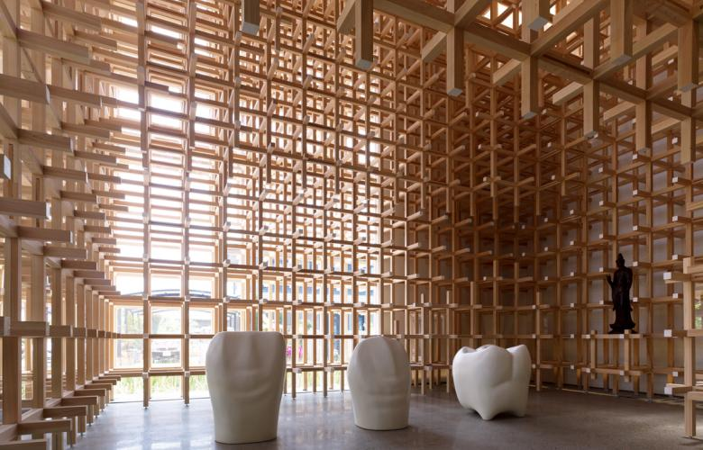
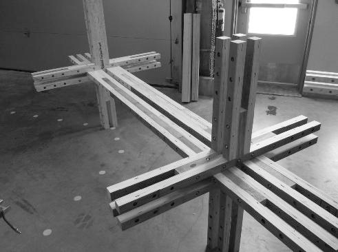

References
To align our project goals with proven construction methods, we investigated traditional and contemporary structural systems that prioritized simplicity, seismic resilience, and modularity. Our exploration led us to three key inspirations:Japanese wood joints:
After some research we stumbled upon Tsugite, a traditional Japanese wood-joining technique that relies solely on interlocking geometry and friction, eliminating the need for bolts, adhesives, or specialized tools. While historically labor-intensive and dependent on artisan craftsmanship, we discovered a modern adaptation by some students from the University of Tokyo, similarly named tsugite. They developed an interactive application that validates joint feasibility and structural integrity computationally, then outputs CNC-millable templates. So anyone that downloaded the application, even without prior knowledge about these types of joints was able to design and produce their own. This innovation resonated with our aim to make shelter construction accessible, inspiring our approach to user-customizable, tool-free assembly. (Images are from this website)


Global seizmic resitant wood structures:
Further research into other wood on wood joints led us to traditional systems that were proven to also be resilient against the forces at play during earthquakes. For example, Dougong is a traditional Chinese bracketing system that dissipates seismic forces through flexible wooden interlockings. (Images are from Core77)


Or Hımış a Turkish timber-frame technique combining lightweight wood lattices with infill panels, renowned for surviving historic earthquakes due to its energy-absorbing grid structure. An example can be seen in the picture below where you can see the remains of a regular building next to one with a Hımış structure after an earthquake, where the latter is still mostly intact. (Images from Journal of Architectural Heritage (top) and Elsevier (bottom))


Modular contemporaty solutions:
Projects like the GC Prostho Museum Research Center (Kengo Kuma) demonstrated how Chidori joints, a puzzle-like wood system based on a Japanese game, could scale into modern architecture. Similarly, the WAAS (Wooden Adaptive Architecture System) showcased a modular grid of standardized timber components, enabling reconfigurable spaces from off-the-shelf materials. Both aligned with our vision of adaptable shelters that could evolve with users’ needs. (Images from Rethink Tokyo and WAAS)




.jpeg)

.jpeg)